Ulstrup
Feinkörniger, geschichteter Granit - schillert in rot- und blaugrau
Höhe ü. d. Erdboden: 164 cm
Größte Breite: 163 cm
Dicke: 32 cm
Runenhöhe: 20 und 22 cm
Runeninschrift :
N.N. errichtete (diesen Stein) zum Andenken an seine Schiffer Thiri und Tofi.
59 - Ulstrup (auch Sønder Vinge 1 oder auch Grøndal Stein genannt - nicht öffentlich - nicht frei zugänglich!) - Letztes Update 16.09.2025
Listennummer : DR 82 / DK MJy 23
| Navidaten: 56.39698 9.79262 oder: Ulstrup Skovvej 20 A, 8860 Ulstrup |
Transliteration: ... -(a)i(s)(þ)i | ...-si : ift | skibara : sin(ą) (:) þ(i)r(i) | : auk : tuf(a) (:)
Über diesen Runenstein wurde erstmals schon im Jahr 1588 von Anders Sørensen Vedel (*09.11.1542 - 13.02.1616, Historiker)
 Bildquelle:
Wikipedia -
Lizenz:
Public Domain
Bildquelle:
Wikipedia -
Lizenz:
Public Domain
berichtet, als er im Ulstrup Forst, im Grøndal, entdeckt wurde - MSS. Vell. Bibl. Reg. no. 826 in fol Gl. kgl. Saml. Kopenhagen. Dazu gibt es in der im Jahre 1851 in Kopenhagen erschienenen Ausgabe "Den danske Krønike af Saxo Grammaticus - oversat af Anders Sørensen Vedel" die Beilage "Historiske Efterretninger om Anders Sørensen Vedel, af C. F. Wegener". Darin findet sich auf S. 158, Nr. 19 dieser Eintrag zu Vedels Aufzeichnungen (Vers auf den Stein im grünen Tal).
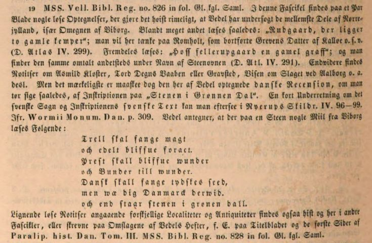
Ole Worm (*13.05.1588 - 31.08.1654, Arzt, Universalgelehrter und der Begründer der Runologie)
 Bildquelle:
Digitale Sammlung der Königlichen Bibliothek Kopenhagen -
Lizenz:
Public Domain
Bildquelle:
Digitale Sammlung der Königlichen Bibliothek Kopenhagen -
Lizenz:
Public Domain
hatte den dänischen König Christian IV. (*12.04.1577 - 28.02.1648)
 Bildquelle:
Wikipedia - Lizenz:
Public Domain
Bildquelle:
Wikipedia - Lizenz:
Public Domain
dazu bewogen am 11. August 1622 einen Brief an die Bischöfe von Dänemark und Norwegen zu senden, um darüber die Pfarrer im Land auzufordern alle Informationen zu Denkmälern, Runensteinen, Grabhügel usw. an ihn zu melden, um die älteste Geschichte Dänemarks zu beleuchten. Unterstützer oder gar treibende Kraft war wohl Christian Friis (*4. November 1581 auf Gut Krastrup in Farstrup - 01. Oktober 1639, dänischer Adliger und königlicher Kanzler).
 Bildquelle:
Wikipedia - Lizenz:
Public Domain
Bildquelle:
Wikipedia - Lizenz:
Public Domain
Der Originaltext dieses Briefes lautet auszugsweise: "Wor gunst tillforn. Wy bede Eder och wille, at I Eders mueligste flid ahnwender allewegne wdj Eders stigt att opsøge och antegne alle slags antiquiteter och documenter effter medfølgende fortegnelsis indhold, och att I saadanne med flid lader optegne och engang inden Paaske førstkommendis wdj wortt cantzelie lader indleffuere. Dermed skie wor willghe. Befalendis Eder Gud. Skreffuitt paa wortt [slott] Kiøbenhaffn, den 10. augusti anno 1622. Vnder vort signett.Christian."
Darüber findet dieser Runenstein von Ulstrup seine erste Erwähnung im Jahre 1623. Albret Holst (Glaser in Hornslet) sandte einen Bericht an die Altertümerkommission in Kopenhagen mit der u.a. Aufzeichnung. In den sogenannten "Præsteindberetninger til Ole Worm 1623-25", also den Rückmeldungen der örtlichen Pfarrer zu der o.a. Aufforderung, finden sich auch die Mitteilungen von Albret Holst. Die eingegangenen Mitteilungen wurden zu einem späteren Zeitpunkt zusammengeheftet. An deren Ende finden sich Holts Abschriften einiger Runensteine, mit Bleistift paginiert von 61-69: Randers 1, Framlev, Vejlby, Øster Alling, Gesing, Sønder Vinge 1 (Ulstrup) Blatt 66, Stenalt, Glenstrup und Gesing. Wie Holst, dessen Namen ansonsten nicht überliefert ist, zu diesem Auftrag kam, bzw. warum er dies tat, oder wer ihm diesen Job gab, ist unbekannt.
Die Præsteindberetninger sind heutzutage online verfügbar unter: Frank Jørgensen, 1974, Præsteindberetninger til Ole Worm / 2 : Indberetninger fra Århus, Fyns og Lunde stifter 1623-25. Infos zu Holst Aufzeichnungen finden sich ab Seite 7ff. (7 in der pdf-Datei). Seine eigentlichen Aufzeichnungen sind darin aber leider nicht enthalten, da sie nur ein Anhang waren.
Zeitlich danach muss der Runenstein irgendwann bewegt worden sein, da es später heißt, dass er an dem Weg von Ulstrup nach Rønge auf einem Feld, in der Nähe zu der zur Runensteinzeit schiffbaren Gudenå gefunden wurde. Zu einer ungewissen Zeit wurde der Runenstein in die südliche Gartenmauer des Ulstrup Herrenhofes - östlich der Eingangspforte - eingesetzt. 1932 wurde der Stein unter der Aufsicht des Nationalmuseum herausgenommen - wohl veranlasst von Erik Moltke (*04.04.1901 - 19.10.1984, Runologe, Historiker) - und auf einer Rasenfläche innerhalb des Gartens südlich von Schloss Ulstrup (Rückseite) aufgestellt.
Die Inschrift, die innerhalb von vier senkrechten Linien verläuft, wird auf die Zeit 970 - 1020 datiert. Sie beginnt in der unteren linken Ecke und verläuft zunächst gleichartig über zwei parallele Linien. Dann wird sie bustrophed (abwechselnde Schreibrichtung) weitergelesen, d.h. die dritte Linie von links wird von oben nach unten gelesen um dann in der letzten Linie wieder von unten nach oben gelesen zu werden.
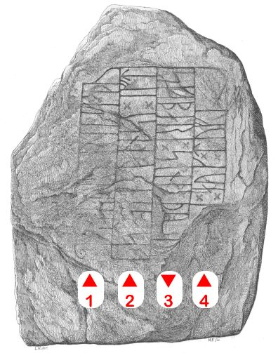
Bildquelle: Zeichnung von Magnus Petersen (*04.09.1827 - 01.02.1917, Archäologischer Zeichner und Restaurator)Diese Zeichnung stammt von Jon Skonvig (*1600 - 1664, Pfarrer und der Runenzeichner für Ole Worm) aus dem Jahr 1629. Er reiste im Auftrag von Ole Worm, dem Begründer der Runologie, durch die Lande und erfasste und skizzierte die Denkmäler.
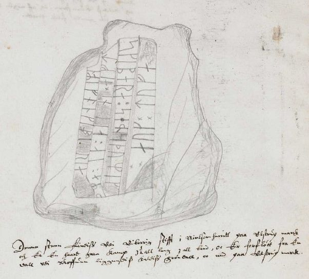
Lizenz: Public DomainOriginalgröße: 12,2 cm / Text auf der Skizze: "Denne steen Findis Vdi Viborrig stifft i Mielsom herritt paa Vlstrup marck och Er En haard graa Kamp 3 ½ all lang 3 all bred, oc Er forfløtt fra En dall vdi Skoffuen liggendiss kaldiss Grøndall, oc ned paa Vlstrup marck".
Diese Aufzeichnung von Jon Skonvig hat sich in der "A.M. 367 fol." erhalten. Die entsprechende originale Seite 14v kann innerhalb der AM 367 fol. im Internet über www.handrit.is als pdf-Datei aufgerufen und auch downgeloaded werden.
Die von Jon Skonvig angefertigten Bände kann man in der "Arnamagnæanske samling, AM 366-371 fol." - zu deutsch: Arnamagnäanische Sammlung - online anschauen /abrufen.
Diese Sammlung hat die Aufgabe nordische, mittelalterliche Manuskripte zu erhalten und zu erforschen, die auf der Sammlung von Árni Magnússon (*13.11.1663 - 07.01.1730, Professor und Handschriften Sammler) basieren.
 Bildquelle:
Königliche Bibliothek Kopenhagen -
Lizenz:
Public Domain
Bildquelle:
Königliche Bibliothek Kopenhagen -
Lizenz:
Public Domain
Am Mittwoch, 28.09.2022, war ich in der Universität Kopenhagen, in der Arnamagnæanske Samling, und durfte das Original - A.M. 367 fol. - in Händen halten und eingehend fotografieren. Man bat mich aber von einer Veröffentlichung meiner Fotos abzusehen und stattdessen auf die digitalisierte Handschrift über www.handrit.is zu verweisen.

Ole Worm verwendete diese Vorlage von Jon Skonvig dann in seinem Werk "Danicorum Monumentorum Libri Sex, Hafniae, 1643", S. 305, für diesen Metallschnitt.
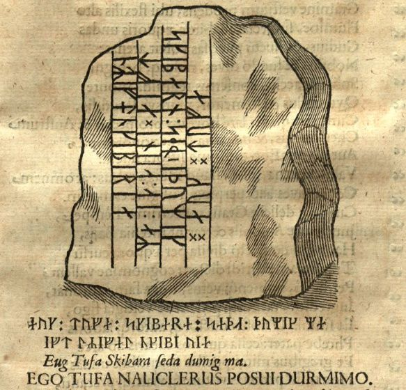
Quelle: Mecklenburg-Vorpommern, Digitale Bibliothek - https://nbn-resolving.org/urn:nbn:de:gbv:9-g-4876466 - Screenshot abgerufen 23.01.2023
Auf seiner S. 309 trägt Ole Worm vor, dass er am Ende einer alten Handschrift - er gibt nicht an welche - diese Passage fand:
Darauf basierend wird der Runenstein in früherer Zeit meist "Grøndal Stein" genannt.
Ole Worm führt dann weiter aus, dass auch in dem 1612 in Kopenhagen erschienenen Werk von Johannes Messenius (*1579 - 1636, war ein schwedischer Historiker, Dramatiker und Universitätsprofessor)
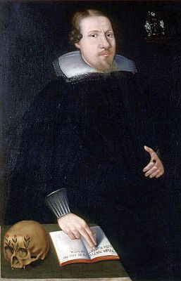
Bildquelle: Wikipedia - Lizenz: Public Domain
mit dem Titel "Specula" über diesen Stein berichtet würde (Google S. 58): "...Firmus adhuc extat lapis hac in valle virenti... = Der Stein steht immer noch fest in diesem grünen Tal."
Der Runenstein sollte aufgrund einer königlichen Verfügung vom 9.2.1652 nach Kopenhagen versandt werden (siehe: Nordisk Tidsskrift for Oldkyndighed, Band 1, 1832, S. 326) - "...Frands Povisk til Hald; ...Grøndal-Stenen...". Dieser Anweisung kam man in Sønder Vinge/Ulstrup, wie andernorts auch, jedoch nicht nach. Seitens Kopenhagen wurde nicht nachgehakt, da dort 1654 die Pest ausbrach, was auch Ole Worm noch im gleichen Jahr den Tod brachte.
Die nächste Erwähnung des Runensteins findet sich bei Johannes Meier (1660, Lehrer und Verfasser) in seinem Werk Liber monumentorum Danicorum, qvi monumenta Danica Olai Wormii partim emendat partim locupletat (pdf-Datei anhand eigener Fotos von mir erstellt) von 1654 (Blatt 19) - Königlichen Bibliothek in Kopenhagen - GKS 2371 kvart


 Bildquelle:
Wikipedia - Lizenz:
Public Domain
Bildquelle:
Wikipedia - Lizenz:
Public Domain
hinzugefügt worden sein. Text und Zeichnungen der Handschrift - auch im Zusammenspiel - sind ansehnlicher ausgeführt als in NKS 799.
In der Königlichen Bibliothek in Kopenhagen hat sich von Johannes Meier aber auch noch eine zweite Handschrift erhalten - NKS 799 kvart - Joh. Mejeri Monumenta Runica in Dania (pdf-Datei anhand eigener Fotos von mir erstellt). Deren Entstehungsdatum ist nicht bekannt. Der Runenstein findet sich auf Blatt 18.


NKS 799 kvart - Joh. Mejeri Monumenta Runica in Dania - Papier - 44 Blatt, Blatt 41-44 unbeschrieben, aus dem 18. Jahrhundert, vormals Nr. 70 in der Manuskript Sammlung von Peder Frederik Suhm (*18.10.1728 - 07.09.1798)
 Bildquelle:
Wikipedia - Lizenz:
Public Domain
Bildquelle:
Wikipedia - Lizenz:
Public Domain
Es handelt sich um
ein Büchlein mit einfachem Pappeinband, der Buchrücken ist aus
Leder und
verstärkte Ecken aus Leder weist der Buchdeckel auf. Es hat die
Maße: H: ca. 20
cm / B: ca. 17 cm / D: ca. 1,5 cm. Zu den einzelnen Zeichnungen im Büchlein
wurde ein einfacher Maßstab abgebildet.
Bei beiden Exemplaren
weist immer das rechte Blatt der Doppelseite in der oberen Ecke eine mit
Bleistift geschriebene Seitenzahl auf. Diese beiden Werke sind Abschriften von
früheren Werken, die die Zeit nicht überdauert haben.
Vielleicht sind sie in
Kopenhagen beim
Großbrand von 1728
vernichtet worden, als neben zahlreichen privaten Beständen auch ca.
35.000 Bücher der Königlichen Bibliothek
in
Kopenhagen ein Raub der Flammen wurden!
Die
GKS 2371 kvart soll laut
Prof. Ludv. F. A. Wimmer
(*07.02.1839 -
29.04.1920, Philologe und Runenforscher
-
link-LIVES -
Politiets registerblade
-
Bestattungsprotokoll)
 Bildquelle:
Fotografie zw. 1877-1900 von Fotograf Hansen & Weller
-
Det Kgl. Biblioteks billedsamling - Lizenz:
Public Domain
Bildquelle:
Fotografie zw. 1877-1900 von Fotograf Hansen & Weller
-
Det Kgl. Biblioteks billedsamling - Lizenz:
Public Domain
und seinen Infos von Christian Walter Bruun (*10.12.1831 - 28.02.1906, Königlicher Oberbibliothekar - link-LIVES)
 Bildquelle: Fotografie
um 1880 von Fotograf J. Petersen
(*19.03.1829 -
01.02.1905) -
Det Kgl. Biblioteks billedsamling - Lizenz:
Public Domain
Bildquelle: Fotografie
um 1880 von Fotograf J. Petersen
(*19.03.1829 -
01.02.1905) -
Det Kgl. Biblioteks billedsamling - Lizenz:
Public Domain
von
Niels Foss selbst abgeschrieben worden sein. Er hat die Texte laut
den Studien von
Erik Moltke
(*04.04.1901 - 19.10.1984, Runologe, Historiker)
offenbar überarbeitet, verkürzt oder geändert und seine eigene
Orthografie eingebracht (z.B. alt: haffuer - bei Foss: haver / tyck/tyk /
kircke/kirke / oc/og u.a.).
In der
NKS 799 kvart hingegen steht auf der Seite 37 links unten "Niels
Knudsen Jerne" und seine Handschrift lässt vermuten, dass er die
gesamte Abschrift angefertigt hat. Er war offenbar ein professioneller Schreiber
und könnte mit dem Niels Knudsen identisch sein, der
1728 "Skriverkarl" auf dem Holmen (Stadtviertel von
Kopenhagen) war, also ein Mann der schnell viele Texte schreiben und liefern
konnte. Er wurde am 08.11.1737 zum "ekvipageskriver"
ernannt. Es scheint dass er sich entgegen
Niels Foss sehr eng an das Original gehalten hat.
Offenbar gab es laut dem Katalog über die Büchersammlung
von
Peter
Hansen Resens (*17.06.1625 -
01.06.1688)
 Bildquelle:
Wikipedia - Lizenz:
Public Domain
Bildquelle:
Wikipedia - Lizenz:
Public Domain
"Bibliotheca
Regiæ Academiæ Hafniensi donata" Hafniæ (Kopenhagen) von
1685 - siehe
S. 273 - früher noch ein drittes Werk von
Johannes Meier mit dem Titel "Johan. Meieri
liber MS. de Monumentis Runicis sive antiqvis Danicics".
Quelle:
Erik
Moltke -
Jon Skonvig og de andre runetegnere. Et bidrag til runologiens historie i
Danmark og Norge I-II,
1956-58
Band 2
-
Kapitel 13
Zwischen Montag, 26.09.2022, und Mittwoch, 28.09.2022, habe ich in der Königliche Bibliothek - Den sorte Diamant - in Kopenhagen - u.a. diese beiden alten Handschriften nach Online-Vorbestellung zur Ansicht erhalten. Ich durfte mir Aufzeichnungen machen, sie aber auch uneingeschränkt fotografieren. Ich habe sie mit dem Smartphone komplett als Doppelseiten fotografiert und daraus jeweils eine pdf-Datei erstellt. Vielleicht hat ja jemand Bedarf an diesen seltenen Ausgaben, die aufgrund ihres Alters keinem Urheberrrecht mehr unterliegen.
Peder Syv (*22.02.1631 - 17.02.1702, Philologe, Priester)
 Bildquelle:
Wikimedia - Lizenz:
Public Domain
Bildquelle:
Wikimedia - Lizenz:
Public Domain
hat auch eine Notiz zu dem Sønder Vinge 1 (Grøndal) Runenstein angefertigt. Die hat sich in der Handschriftensammlung Rostgaard 21 (bewahrt in der Königlichen Bibliothek in Kopenhagen - Den sorte Diamant) in Kopenhagen (Darin: 10 - Peder Syv: Optegnelser om Runemindesmærker og om Mønter. S. 341-371) erhalten. Die vorgenannte Notiz auf dem Blatt 368, die zwischen 1685 und 1700 niedergeschrieben wurde, berichtet basierend auf einer älteren Handschrift, über die keine näheren Angaben gemacht werden, von einer Inschrift.

Handschriftlicher Text:
Af et gl: Msc.
Denne efterfølgende Skrift findes paa den Runesteen som findes paa Rÿnger mark ved Ulstrup.
- - -
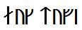
- -det andet vilde jeg ej udskrive, eftersom der var intet viist derudi.
Quelle: Erik Moltke (*04.04.1901 - 19.10.1984, Runologe, Historiker), To runedokumenter, S. 206-207, in: Acta Philologica Scandinavica, Tidsskrift for nordisk sprogforskning, Niende Bind, 1934-35, S. 193-221
Peder Frederik Suhm (*18.10.1728 - 07.09.1798)
Bildquelle:
Wikipedia - Lizenz:
Public Domain
veröffentlichte das Buch mit dem Titel "Samlinger til det Danske Historie" und in dem 1780 in Kopenhagen erschienenen Band I, 2. Heft wurde unter der Nr. 7 der Beitrag: "Udtog af Hr. Peder Syv store handskrevne Samlinger" ab S. 105 ff. abgedruckt (Übersetzung: Auszug aus der großen Handschriften Sammlung von Hr. Peder Syv). Auf der S. 117 (S. 14 in der pdf-Datei) findet sich dann ein Beleg zu dem Runenstein von Ulstrup: "Af et gammelt Manuskrift anfører Forfatteren herpaa endnu følgende Runestene... 1) Paa Rynger Mark ved Ulstrup, heraf kan intet læses uden de to Ord: aug tufi" - Übersetzung: "Aus einem alten Manuskript führt der Autor auch folgende Runensteine an. 1) Auf Rynger Mark bei Ulstrup ist nichts zu lesen außer die beiden Worte: aug tufi."
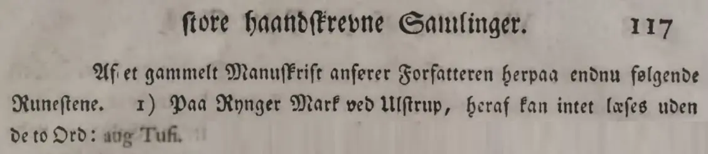
Peder Hansen Resen (*17.06.1625 - 01.06.1688, Jurist und Historiker)
Bildquelle:
Wikipedia - Lizenz:
Public Domain
hat mit dem von ihm über 20 Jahre gesammelten Material das großartige Werk "Atlas Danicus", bestehend aus letztlich 39 Folianten, geschaffen. Nur geringe Teile wurden aber zu seiner Lebzeit gedruckt. Die Bände wurden wenige Jahre nach seinem Tod 1692 an die Königliche Bibliothek Kopenhagen übergeben. Aufbewahrt wurden sie auf dem Dachboden der Trinitatis Kirche. Dort wurden sie fleißig studiert, abgeschrieben und zeitweise ausgeliehen. Leider wurde dann ein Großteil davon beim Kopenhagener Großbrand 1728 zerstört. Es hat sich neben einigen Originalseiten - siehe Arnamagnäanische Sammlung - AM 359 fol. / AM 360 fol. / AM 361 fol. und AM 362 fol. (digitalisiert) - nur eine (verkürzte) Abschrift und außerdem Kupferstiche von etwa 200 Städteansichten aus der Vogelperspektive erhalten. Originale dieser AM 359/360/361 fol sind über die Universität Kopenhagen - Institut for Nordiske Studier og Sprogvidenskab (NorS) - AM 359 fol / AM 360 fol / AM 360 fol (Karten) / AM 361 fol - in sw abrufbar. Eine zweite (verkürzte) Ausgabe war von Vincent Lerche (*04.04.1666 - 28.07.1742, Jurist, Architekt) beauftragt worden, diese wurde aber beim Brand von Schloss Christiansborg im Jahr 1794 vernichtet.
In der Königlichen Bibliothek in Kopenhagen wird seit 1803 in der Sammlung Uldall (186 folio) diese einzige verbliebene Ausgabe, die in den 1750er Jahren durch den Hofbaumeister Laurids de Thurah (*04.03.1706 - 06.09.1759)
 Bildquelle:
Wikimedia - Lizenz:
Public Domain
Bildquelle:
Wikimedia - Lizenz:
Public Domain
aus verstreuten Resten des Atlas Danicus in 7 Bänden rekonstruiert worden war, aufbewahrt:
Wie diesem Titel zu entnehmen ist, gehörte dieses Exemplar vormals Adam Gottlob Graf von Moltke (*10.11.1710 - 25.09.1792, Staatsmann, Diplomat)
 Bildquelle:
Wikimedia - Lizenz:
Public Domain
Bildquelle:
Wikimedia - Lizenz:
Public Domain
Nach dessen Tod erwarb Herman Treschow (*11.12.1739 - 02.05.1797, Professor für Theologie, Pfarrer) diese Ausgabe. Peter Uldall (*29.06.1743 - 11.11.1798, Jurist, Theologe)
 Bildquelle:
Wikimedia - Lizenz:
Public Domain
Bildquelle:
Wikimedia - Lizenz:
Public Domain
wiederum kaufte sie für 170 Rigsdaler (Rigsdaler zu 24 Skilling - damals 1 ½ Mark) nach dessen Ableben. Er hatte aber nicht lange Freude daran, denn er starb ein Jahr später an einem Schlaganfall. Sein Sohn, Justizrat W. A. Uldall, schenkte diese Ausgabe der Kgl. Bibliothek im Jahr 1803, wo dieses großartige Werk noch heute verwahrt wird - Ein Band hat übrigens die stolze Größe H/B/D von 40 cm x 29,5 cm x 9,5 cm.
Im Atlas VI. ist auf der Seite 536 ein Eintrag / Zeichnung vom Runenstein enthalten, die ich am 28.09.2022 vor Ort fotografieren durfte.


Damit man mal sieht wie eine aufgeklappte Doppelseite von "Resens Atlas" aussieht, habe ich diese hier beispielhaft ausgewählt. Der Band hatte die Maße in Höhe/Breite/Dicke von 40 cm x 29,5 cm x 9,5 cm! Es gab zwei Schaumstoffkeile dazu, damit der Buchrücken keinen Schaden beim Durchsehen erleidet.
Der Abschnitt des Atlas Danicus wurde 1933 von Chr. Behrend ins Dänische übersetzt und von Gunnar Knudsen als "Peder Hansen Resens Atlas Danicus, VI, B:, Viborg Bisepdømme", herausgegeben.
Der Versuch (m)einer Übersetzung des dänischen Textes - S. 120-121 - zu dem Runenstein: "Der fünfte auf Ulstrup Mark ist 3 ½ Ellen lang und etwa ebenso breit, sein Aussehen zeigt die nebenstehende Abbildung. Der Text darauf lautet: "Ich Tufa ein Schiffer errichte ihn für Durmimus" wie Ole Worm es interpretiert. Wer wissen will was das übrige bedeutet, muss raten. Aber man muss wissen, dass die Einwohner es als eine Vorhersage der Zukunft betrachten."
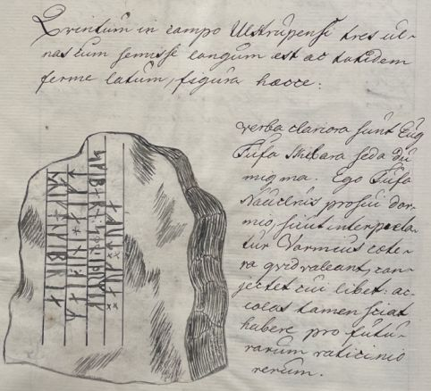
Erik Pontoppidan (Der Jüngere, dänisch-lutherischer Bischof, Theologe und Autor, *03.09.1698 - 20.12.1764)
 Bildquelle:
Wikipedia - Lizenz:
Public Domain
Bildquelle:
Wikipedia - Lizenz:
Public Domain
erwähnt den Runenstein in seinem 1741 erschienen Werk "Marmora Danica selectiora. 2" auf der Seite 132ff.
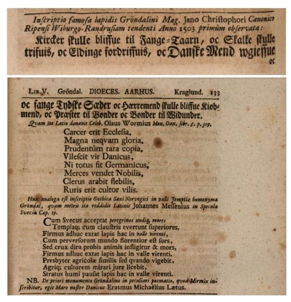
Screenshot aus urn:nbn:de:bvb:12-bsb10328985-6 - Münchener Digitalisierungszentrum, Digitale Bibliothek, Bayerische Staatsbibliothek
Er hat nochmals in seinem Werk von 1768 "Den Danske Atlas" - Band IV, cap. XII, del. 1 auf der S. 658 (d) - Seite 37 d in der pdf-Datei - Ausführungen zum Standort des Runensteins gemacht: "I dette Sogn midt imellem Ulstrup og Rønge, tet ved Landeveien, ligger en stor Steen halvfierde Alne høi og snart lige saa bred, med en Runeskrift paa, som er saa forsledt, at den neppe kan læses. Om denne Steen er det en almindelig Sagn, at den er hid forslyttet fra et andet Sted kaldet Grøndal, og at det er den samme Steen, hvorpaa en Canik fra Ribe, som 1503. Drog fra Viborg til Randers, skal have læst den fameuse Inscription udhuggen i Steenen med Kobber Bogstaver: Kirker skulle blive til Fangetaarn, Skalke skulle trives, Eldinge fordrives, Danske Mænd vorde ugieve og fange tydske Sæder, Herremænd skulle blive til Kiöbmænd, Prester til Bönder, og Bönder til Vidunder. Vel synes denne Skrift at et muntert Hoved at være gjort enten som en Satire over fine eller en Spaadom om tillkommende Tiders Tilstand, men at den staaer paa denne Steen, er en pur Digt, som Wormius allerede i sin tid har anmerket, naar han i sine Monum. Dan. p. 305, giver en Tegning deraf, hvilken i Henseende til Skriften vel ikke er fuldkommen rigtig, men saa viser den dog, at det er en ordinair Rune-Inscription over nogen Afdød, og ikke indeholder det allermindste, som ligner oven anførste Danske Inscription. Vel mueligt, at den gode Erasmus Lætus, som i sin Bucolica trykt 1560. udi den 5te Ecloga kaldet Myrmix, har indkladet denne Fabel i en prægtig Latinske Poesie, selv kunde være Metser derfor, da den smager af de Tiders Genie."
Übersetzung (ohne Gewähr): "In dieser Gemeinde, auf halber Strecke zwischen Ulstrup und Rønge, in der Nähe vom Landweg, steht ein großer Stein, ? Ellen hoch und fast genauso breit, mit einer Runenschrift darauf, die so verblasst ist, dass man sie kaum lesen kann. Es gibt eine gemeinsame Legende über diesen Stein, dass er von einem anderen Ort namens Grøndal hierher geschmuggelt wurde und dass es derselbe Stein ist, auf dem ein Domherr aus Ribe, der 1503 eine Tagesfahrt von Viborg nach Randers unternahm, die berühmte Inschrift gelesen haben muss mit Kupferbuchstaben in den Stein gemeißelt: Kirchen sollten Gefängnistürme werden, Steingarten sollte gedeihen, Adlige sollten vertrieben werden, dänische Männer sollten unregiert und Gefangene deutscher Sitze werden, Herren sollten Kaufmann werden, Priester zu Bauern und Bauern sich wundern. Nun, diese Schrift scheint entweder als Satire auf Finesse oder als Vorhersage über den Zustand zukünftiger Zeiten einen fröhlichen Kopf zu haben, aber die Tatsache, dass sie auf diesem Stein steht, ist ein reines Gedicht, das Wormius schon zu seiner Zeit bemerkte, als er seine Monumen. Dan. S. 305, schrieb. Er gibt eine Zeichnung wieder, die von der Schrift her wohl nicht ganz korrekt ist, aber doch zeigt, dass es sich um eine gewöhnliche Runeninschrift über einen Verstorbenen handelt, die nicht die geringste Ähnlichkeit mit der obigen dänischen Inschrift aufweist. Gut möglich, dass der gute Erasmus Lætus (auch: Rasmus Glad genannt, *1526 - 09.11.1582), der in seiner 1560 gedruckten Bucolica und in der 5te Ecloga namens Myrmix diese Fabel in eine prächtige lateinische Poesie gehüllt hat, selbst der Meister gewesen sein könnte, wie es nach dem Genie der Zeit schmeckt."
Dieser Erasmus Lætus hat den Runenstein darin poetisch behandelt "Saxum ingens, crudum, nodisq = ein riesiger, roher nordischer Felsen", wodurch der "Grøndals-Stenen" der erste literarisch erwähnte Runenstein wurde!
Jacob Langebek (* 23. Januar 1710 - 16. August 1775, dänischer Historiker und Geheimer Archivar)
 Bildquelle:
Wikipedia - Lizenz:
Public Domain
Bildquelle:
Wikipedia - Lizenz:
Public Domain
hat in seinem handschriftlichen Manuskript "Excerpter 62 - Landsbyer i Jylland" - ohne Datumsangabe - unter "Grøndal" zwei Aufzeichnungen aus dem 17. Jahrhundert über den gleichnamigen Stein mit Inschrift.
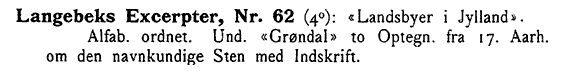
Quelle: E. Gigas: Katalog over Det store kongelige Bibliotheks Haandskrifter. Første Bind (1903) - S. 43
Søren Abildgaard (*18.02.1718 - 02.07.1791, Zeichner, Kupferstecher und Geologe)
 Bildquelle:
Jellingprojektet - Lizenz:
Public Domain -
http://www5.kb.dk/images/billed/2010/okt/billeder/object444188/da/
Bildquelle:
Jellingprojektet - Lizenz:
Public Domain -
http://www5.kb.dk/images/billed/2010/okt/billeder/object444188/da/
zeichnete den Runenstein im Jahr 1776. Das Originalblatt hat die Größe 17 x 21 cm.
Der Digitale Sammlung des Nationalmusems Kopenhagen entnommen. Lizenz: CC-BY-SA
Text auf der Skizze: Denne Runesteen ligger i Vinge sogn, Medelsom Herred imellem Ulstrup og Rynge vde Guden Aa i en Ager, meget beskadiget og afstødt formedelst Ploven, som ofte trækkes over samme Runesteen. S: Abildgaard.
Darunter noch sein Hinweis, dass 1768 in "Den Danske Atlas" - Tomus IV, S. 658 von Erik Pontoppidan (der Jüngere, *03.09.1698 - 20.12.1764) zu dem Runenstein berichtet wird - siehe oben.
Rasmus Nyerup (*12.03.1759 - 28.06.1829, dänischer Literaturhistoriker, Philologe, Folklorist und Bibliothekar)
 Bildquelle: 1827
aus Kunstsammlung abfotografiert -
Det Kgl. Biblioteks billedsamling - Lizenz:
Public Domain
Bildquelle: 1827
aus Kunstsammlung abfotografiert -
Det Kgl. Biblioteks billedsamling - Lizenz:
Public Domain
bringt zu diesem Runenstein einen Beitrag in seinem 1806 erschienenen Band IV von "Historisk-statistisk Skildring af Tilstanden i Danmark og Norge i ældre og nyere Tider - Oversyn over Fædernelandets Mindesmærker fra Oldtiden" auf der S. 99-101.
Johan Gustav Liljegren (*27.02.1791 -02.06.1837, schwedischer Nationalarchivar und Archäologe)
 Bildquelle:
Schwedisches Reichsarchiv - Lizenz:
Public Domain
Bildquelle:
Schwedisches Reichsarchiv - Lizenz:
Public Domain
geht erstmals in einem 1820 erschienen Aufsatz in dem Buch "Det Skandinavske Litteraturselskabs Skrifter, Band 10, 17. Band" auf der S. 416-420 auf den Runenstein ein.
Außerdem setzt er sich mit ihm in seinem 1832 erschienenen Buch "Run-Lära" auf der S. 87 ff. kurz auseinander. Er verweist in diesen beiden Aufsätzen auch jeweils auf die Abhandlung von Rasmus Nyerup - siehe oben.
Ferner führt er ihn in seinem Werk "Run-Urkunder" von 1833 auf der S. 172 mit der Nummer 1528 an.
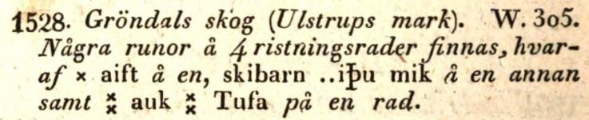
Dieses Werk findet sich in einer digitalisierten Ausgabe im Internet über die Bayerische Staatsbibliothek / MDZ Münchener DigitalisierungsZentrum Digitale Bibliothek - urn:nbn:de:bvb:12-bsb10431145-1 - Screenshot vom 24.01.2023.
Von Rasmus Henrik Kruse (*07.08.1796 - 30.05.1877, Landschaftsmaler - link-LIVES - Heirat 21.12.1851),
 Bildquelle:
Det Kgl. Biblioteks billedsamling - Lizenz:
Public Domain
Bildquelle:
Det Kgl. Biblioteks billedsamling - Lizenz:
Public Domain
der zahlreiche Runensteine gezeichnet hat, hat sich im "Antikvarisk-Topografisk Arkiv" in Kopenhagen in seinen Aufzeichnungen mit dem Titel "Nørre Jyllands Mærkværdigheder i det 19. Aarh. Hs. Bd 1-2 (med) Tillæg 1-2" eine Zeichnung von 1843 bewahrt. Die findet sich genaugenommen im Band II, Nr. 18, zw. den S. 43 und 44.


#/media/Datei:Fotoreproductie_van_een_schilderij,_voorstellende_een_portret_van_Christian_Friis_til_Kragerup_Christian_Friis_(til_Kragerup)_(titel_op_object),_RP-F-2001-7-742-16.jpg){kind=link}


Dieses Werk wird heute im Nationalmuseum in Kopenhagen, Antikvarisk-Topografisk Arkiv, aufbewahrt. Dort durfte ich am Dienstag, 27.09.2022, zu Gast sein und die vier Bände in Händen halten und fotografieren.
Durch Prof. Julius Magnus Petersen (*04.09.1827 - 31.01.1917, Archäologischer Zeichner und Restaurator - link-LIVES - Bestattungsprotokoll)
 Bildquelle: Fotografie
von 1903 von Fotograf Marius Christensen
(*24.06.1874 -
25.06.1907) -
Det Kgl. Biblioteks billedsamling - Lizenz:
Public Domain
Bildquelle: Fotografie
von 1903 von Fotograf Marius Christensen
(*24.06.1874 -
25.06.1907) -
Det Kgl. Biblioteks billedsamling - Lizenz:
Public Domain
wurde diese Zeichnung im Jahr 1869 für das Runenwerk von Prof. P. G. Thorsen (*07.08.1811 - 06.05.1883, Bibliothekar, Runenforscher und Historiker - link-LIVES - Artikel: Levnedsbeskrivelser af de ved Københavns Universitets Firehundredaarsfest promoverede Doktorer, Illustreret Tidende 1882, Nr. 1235 - vom 27.05.1833 / Grabstein in Varde / Eheschließung in Varde am 19. August 1848)
 Fotografie zw. 1863-1900
von
Fotograf Budtz Müller
(*26.12.1837 -
30.12.1884) -
Det Kgl. Biblioteks billedsamling - Lizenz:
Public Domain
Fotografie zw. 1863-1900
von
Fotograf Budtz Müller
(*26.12.1837 -
30.12.1884) -
Det Kgl. Biblioteks billedsamling - Lizenz:
Public Domain
"De danske Runemindesmærker, beskrevne og forklarede af P.G. Thorsen Anden Afdeling Jyllands Runemindesmærker tilligemed Meddelelser om alle Øernes, Afbildninger og Text, 1869" - Nr. 50 - angefertigt - Google Scan.
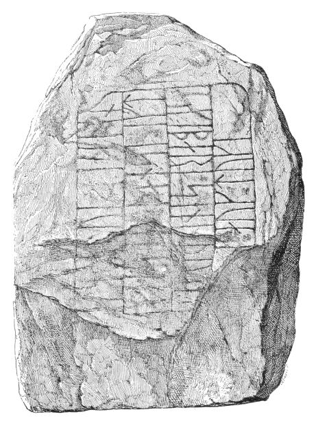
In seinem im Folgejahr 1880 erschienenen "Band II, Text" bringt er auf den Seiten 143-144 seine textlichen Ausführungen zu diesem Runenstein.
P. G. Thorsens Nachlass (Bezeichnet als: P. G. Thorsens optegnelser, tegninger m.m. vedrørende runer og runemindesmærker - überführt aus der Kopenhagener Universitätsbibliothek 1929 - Gemäß Ministerialschreiben vom 04.03.1929; früher benannt als Additamenta 612 kvart) - findet sich in der Königlichen Bibliotek unter NKS 3296 kvart (in mehreren einzelnen Pappschachteln). In der Pappschachtel mit der Nummer 17 fanden sich diese Zeichnungen. Zum einen eine auf den 05.10.1869 datierte Zeichnung des "Gröndalstenen" von Magnus Petersen und außerdem noch eine Kopie der Zeichnung von Rasmus Henrik Kruse. Die zweite Zeichnung ist quasi nur eine Kopie der Zeichnung von Rasmus Henrik Kruse - siehe oben. Im alten Dänischen als "Kalke" bezeichnet = exakte Wiedergabe (Kopie) einer Zeichnung, eines Musters etc. auf Papier oder Leinwand, insbesondere Nachzeichnung auf Transparentpapier oder Leinwand oder Abdruck auf feuchtem Papier etc. von Runenstein, Münze usw. Siehe "Ordbog over det danske sprog - Historisk Ordbog 1700-1950" - daraus die o.a. Erklärung (übersetzt).


Diese Zeichnung fertigte Prof. Julius Magnus Petersen im Jahr 1877 für Prof. Ludv. F. A. Wimmer (*07.02.1839 - 29.04.1920, Philologe und Runenforscher - link-LIVES - Politiets registerblade - Bestattungsprotokoll)
Bildquelle:
Fotografie zw. 1877-1900 von Fotograf Hansen & Weller
-
Det Kgl. Biblioteks billedsamling - Lizenz:
Public Domain
und dessen großformatiges Runenwerk "De danske runemindesmærker undersøgte og tolkede af Ludv. F. A. Wimmer:, Andet bind, Runestenene i Jylland og på øerne. 1899-1901" - Nr. 10, S. 78ff. an - eigener Scan aus der in meinem Besitz befindlichen Ausgabe.
Prof. Ludv. F. A. Wimmer untersuchte den Runenstein vor Ort am 20. und 22. August 1877 und nochmals am 18. Juli 1882.
Prof. Ludv. F. A. Wimmer hat seine jahrelangen Aufzeichnungen der "Kgl. Bibliotek" in Kopenhagen überlassen. Ein Verzeichnis darüber wurde 1915 in Buchform herausgegeben - "Collectio runologica Wimmeriana: Fortegnelse over Ludv. F. A. Wimmers runologiske o. a. Samlinger i Det kgl. Bibliotek"
In seinen Unterlagen in der Königlichen Bibliothek befinden sich unter "III - Originaltegninger af de danske Runemindesmærker, udførte paa Undersøgelsesrejserne af Magn. Petersen og kontrollerede paa Stedet af Ludv. Wimmer, samt Prøvetryk af de paa Grundlag af de nævnte Tegninger, Aftryk o. s. v. til De danske Runemindesmærker" udførte Afbildninger med Wimmers Rettelser"


zu dem Runenstein von Ulstrup unter der Nr. 27 Aufzeichnungen von 1878 und 1882, wobei ich am 27.09.2022 diese Zeichnung von Prof. Magnus Petersen - datiert auf den 22.08.1878 - fotografieren durfte.

Herr cand. mag. Frederik Johannes Henrik Orluf (*04.02.1869 -11.09.1954, Lehrer und Hobbyforscher)
 Bildquelle:
Vejle Wiki - Lizenz:
Public Domain
Bildquelle:
Vejle Wiki - Lizenz:
Public Domain
aus Vejle hat in "Danske Studier" aus dem Jahr 1921 einige Zeilen im Hinblick auf die fehlerhafte zeichnerische Wiedergabe bei Jon Skonvig und Ole Worm auf der S. 23 verfasst.
August F. Schmidt (*04.08.1899 - 17.07.1965, dänischer Volks-/Heimatkundler und Autor - link-LIVES)
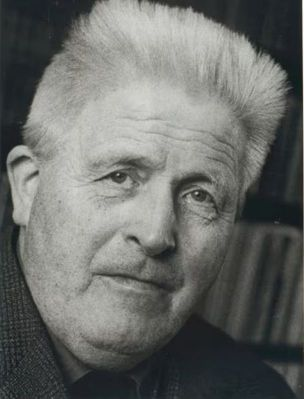
Bildquelle: arkiv.dk - Lizenz: Public Domain - Erlaubnis auf Anfrage 02.12.2024 vom Archiv erhalten - Fotograf unbekanntbringt in Skivebogen - Historisk samfund for skive og omegn, Band 16, 1924 auf den S. 49 ff. einen Aufsatz mit dem Titel "Sagn og Tro knyttet til Stene i Viborg Amt" und geht ab der S. 64ff. unter der Nummer 40 auf den Runenstein ein. Er führt darin an: "...glaubte man früher, es gebe auf dem Stein eine Prophezeiung über das Ende der Welt."
Er hat auch noch diesen Artikel verfasst:: Stenen i grønnen Dal (D.R.M. Nr. 19) - August F. Schmidt - Historie/Jyske Samlinger, Bind 5, række 1 (1932 - 1934), S. 227-233
Erik Moltke (*04.04.1901 - 19.10.1984, Runologe, Historiker - link-LIVES)
 Bildquelle: Scan von Buchumschlag "Runerne i Danmark og ders
oprindelse" - Erik Moltke - 1976 - Lizenz:
CC-BY-SA
Bildquelle: Scan von Buchumschlag "Runerne i Danmark og ders
oprindelse" - Erik Moltke - 1976 - Lizenz:
CC-BY-SA
fertigte diese beiden Fotos am 13.06.1932 an, wobei beim rechten Bild natürlich die Runenlinien nachgezeichnet wurden.
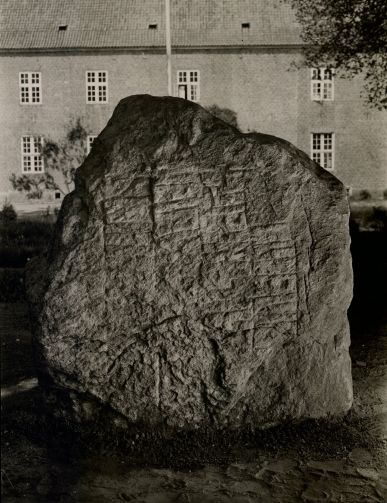
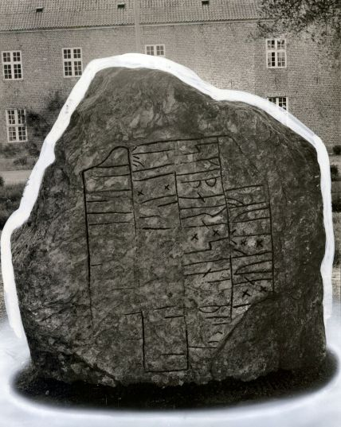
Der Digitale Sammlung des Nationalmusems Kopenhagen entnommen. Lizenz: CC-BY-SA
Im Vorfeld zu dem 2016 erschienenen Buch von Lisbeth M. Imer (*1973, Runologin am Nationalmuseum Kopenhagen) "Danmarks Runesten - en fortælling" reiste sie mit dem Fotografen Roberto Fortuna zur Bestandsaufnahme durch die Lande. Dieser hat die Runensteine mit Schräglicht aufgenommen und darüber wirklich herausragende Fotos erzielt. Dieses Foto entstand am 25.10.2012.
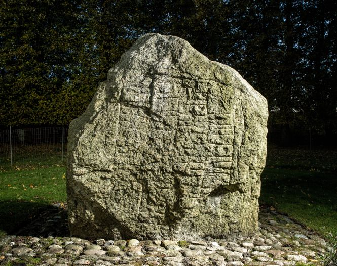
Der Digitale Sammlung des Nationalmusems Kopenhagen entnommen. Lizenz: CC-BY-SA
Bei meinem ersten Besuch vor Ort am Donnerstag, 13.07.2000, und meiner Bitte den Runenstein sehen und ein Foto machen zu dürfen, wurde ich - wie eigentlich überall sonst - sehr zuvorkommend behandelt und in dem Fall von dem Schlossherrn persönlich hingeführt. Darüber hinaus bekam ich die neueste Abhandlung einer regionalen Runenstein-Brochure geschenkt (Fra Runesten til Runesten i Midtjylland, Viborg Stiftsmuseum, Mette Iversen, 2000). Mit den Worten: "Wenn sich jemand für unseren Runenstein interessiert, ist er uns immer herzlich willkommen" wurde ich nach einem kurzen Gespräch und einigen lang ersehnten "Bildern im Kasten" (links und hier) wieder verabschiedet. Meinen nachträglichen Recherchen zufolge war dies der Tierarzt Dr. med. vet. Carl Weinholt Friis (*02.04.1921 - 22.08.2004),
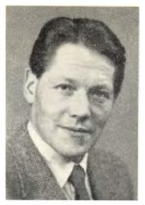
der das Schloss Ulstrup 1980 mit seiner Frau Lilly Friis, geb. Preetzmann (*17.01.1925 - 30.03.2012) käuflich erwarb. 1990 übertrugen Lilly und Carl W. Friis den Nachlass in eine gemeinnützige Stiftung. Zweck der Stiftung ist die Restaurierung und Erhaltung der Gebäude von Ulstrup Hovedgård und die Erhaltung des kulturellen Wertes von Schloss Ulstrup sowie die Bereitstellung von Räumlichkeiten für künstlerische und kulturelle Zwecke.
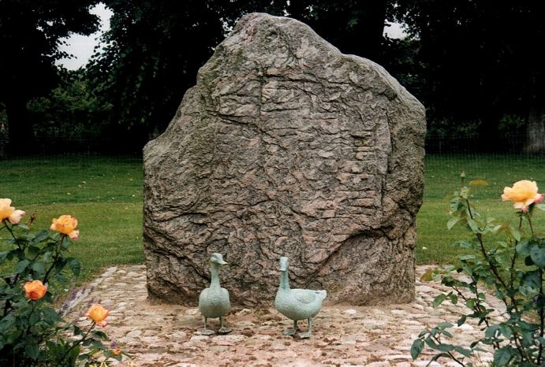
So erging es mir auch bei neuem neuerlichen Besuch am Donnerstag, 25.08.2016. Ich wurde durch einen jungen Herrn direkt rechts um das Herrenhaus herum zum Runenstein begleitet. Danach durfte ich diese Fotos aufnehmen:
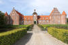 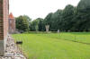 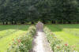 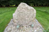 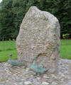 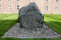


Im Rahmen meiner 2022er Jütland Wikinger Tour kam ich mehrmals hier vorbei. Da beim ersten Besuch, Montag, 06.06.2022, niemand öffnete, kam ich am Donnerstag, 09.06.2022, nochmals hier vorbei. Aber wieder nix. Da meine Unterkunft nicht allzuweit entfernt lag (ca. 15 km) und ich eh in der Ecke war, versuchte ich es am Sonntag, 12.06.2022, im Rahmen einer Radtour nochmals. Diesmal habe ich mich getraut und mal innerhalb des Hofes rechts geklingelt, nachdem sich am Haupthaus links nichts tat. Ein älterer Herr mit einem neugierigen Dackel öffnete zum Glück und die beiden begleiteten mich bereitwillig zum Runenstein, nachdem ich dem Herrn mein Anliegen auf Dänisch vorgetragen hatte (Jeg vil gerne se runesten). Darüber konnte ich diese Fotos fertigen. Diesmal waren die Gänse Bronzeskulpturen nicht mehr da, die sonst immer vor dem Runenstein standen. Die Rosenstöcke, die beidseits den Zugang vom Haupthaus zum Runenstein säumten waren auch nicht mehr da. Die Steinoberfläche schien mir diesmal aber sehr sauber, wie frisch gereinigt, auch wenn das im Hinblick auf die Erkennbarkeit der Inschrift bei normalem Tageslicht nicht wirklich was bringt.
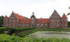 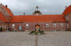 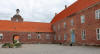 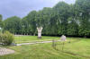 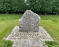 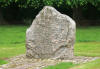 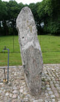 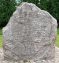 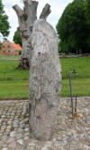 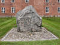 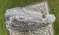


Auf dem zweiten Foto mittig links befindet sich die Tür, an der ich Erfolg hatte. Auf dem dritten Foto mittig rechts ist der eigentliche Haupteingang. Aber nachdem der Besitzer verstorben ist und der Hof als Stiftung weitergeführt wird, wohnt da vielleicht niemand ständig.
Die Informationen zu diesem Runenstein aus der dänischen Runendatenbank finden sich hier.
Der entsprechende Eintrag in "Fund og Fortidsminder" ist hier verlinkt. Darin ist inzwischen dieser Zustandsbericht des Steinrestaurators Leif Vognsen aus dem Jahr 2018 eingebettet.
Über diesen Link finden sich zu dem Runenstein Informationen des Forschungsprojektes "Runes" der Akademie der Wissenschaften zu Göttingen.
Auf dieser Webseite des "Dansk Center for Herregårdsforskning" finden sich alle Informationen zum Herrenhof von Ulstrup.
Standort des Runensteins innerhalb des Schlossareals hier weiss eingekreist.
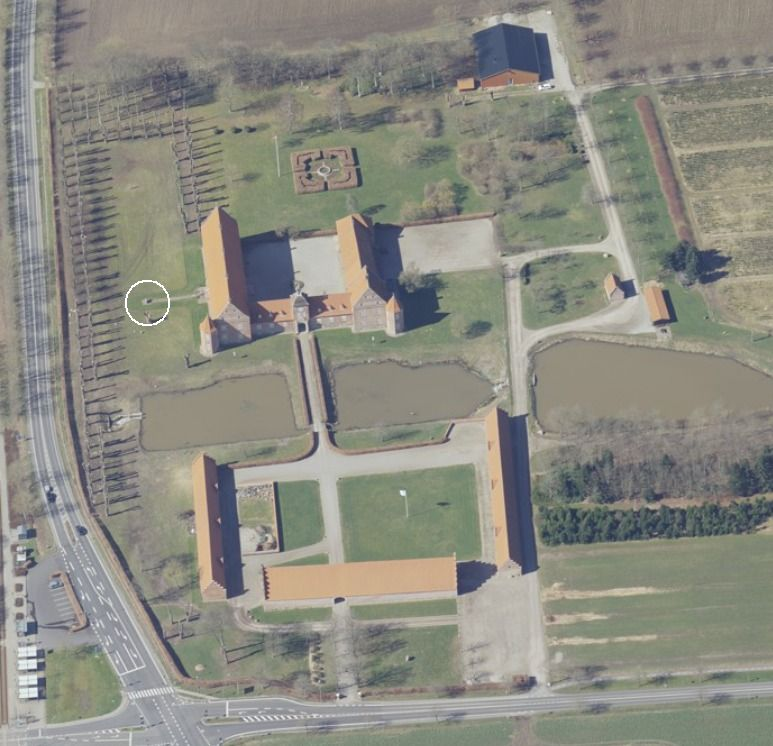
Das ist ein Luftfoto vom 01.11.2023 von Skråfoto. Skråfoto ist eine Webanwendung, die von Klimadatastyrelsen weltweit kostenlos bereitgestellt wird - Freie Nutzung unter Beachtung der Lizenz: CC BY 4.0. Die Aufnahmen werden alle zwei Jahre erneuert und neben einer Senkrechtaufnahme wird ein Schrägbild aus jeder Himmelsrichtung angeboten, das man über eine Adresssuche aufrufen kann. Also gibt man in diesem Fall "Ulstrup Skovvej 20A, Sdr Vinge, 8860 Ulstrup" in die Suchleiste ein, worüber der Herrenhof mit dieser Adresse eingeblendet wird. Hier die aktuellste Aufnahme vom 02.04.2023.